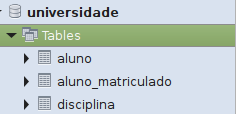

Consultando Registros de Tabelas
Para consultar os registros das tabelas do seu banco existem duas maneiras:
A primeira é utilizando o comando SELECT no campo de querys, exemplo:
SELECT * FROM aluno;
Com esse comando serão retornados todos os registros contidos na tabela aluno.
A segunda maneira para realizar essa mesma consulta não requer a utilização direta de comandos. Basta expandir o SCHEMA universidade localizado no canto inferior esquerdo, e em seguida expandir o submenu Tables.

Depois, clique com o botão direito sobre a tabela cujos registros você deseja visualizar e selecione a opção "Select Rows - Limit 1000", e os registros serão retornados abaixo do campo de querys.
Essa visualização permite que você altere registros de forma direta, apenas dando um duplo clique sobre a linha.
É importante ressaltar que caso você realize alterações dentro dessa visualização você precisa clicar em Apply para que o Workbench crie o comando e aplique as modificações efetivamente.
Note que nesse mesmo menu existem outras possibilidades de comandos (Create, Alter, Drop...).